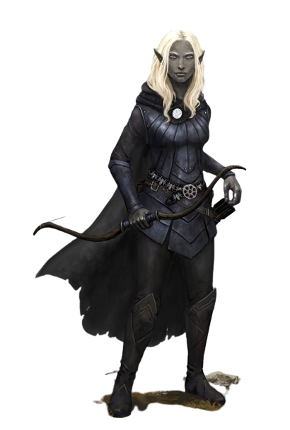

Trecho
"EU NUNCA IMAGINEI QUE TAL BELEZA EXISTISSE," LUA Dourada disse suavemente. A marcha do dia havia sido difícil, mas a recompensa no final estava muito além de seus sonhos. Os companheiros estavam em um alto rochedo sobre a lendária cidade de Qualinost. Quatro pináculos delgados erguiam-se dos cantos da cidade como hastes brilhantes, suas pedras brancas reluzentes mescladas com um tom prateado cintilante. Arcos graciosos, ligando um pináculo a outro, se elevavam no ar. Construídos por antigos ferreiros anões, eles eram fortes o suficiente para suportar o peso de um exército, no entanto, eles pareciam tão delicados, que um pássaro pousado sobre eles, poderia lhes tirar o equilíbrio. Estes arcos cintilantes eram as únicas fronteiras da cidade. Não havia nenhuma muralha em volta de Qualinost. A cidade élfica abria seus braços de forma amorosa para a imensidão. – Margaret Weis & Tracy Hickman, Dragões do Crepúsculo do Outono
Elfos são um povo mágico de graça sobrenatural, vivendo no mundo sem pertencer inteiramente à ele. Eles vivem em lugares de beleza etérea, no meio de antigas florestas ou em torres prateadas brilhando com luz feérica, onde uma música suave ecoa através do ar e fragrâncias suaves flutuam na brisa. Elfos amam a natureza e a magia, a arte e o estudo, a música e a poesia, e as coisas boas do mundo.
Esbeltos e graciosos
Com a sua graça sobrenatural e seus traços finos, os elfos parecem assustadoramente belos para os humanos e os membros de muitas outras raças. Em média, eles são ligeiramente mais baixos do que os humanos, variando de pouco menos de 1,50 metro até pouco mais de 1,80 metro de altura. Eles são mais delgados que os humanos, pesando entre 50 kg a 72 kg apenas. Os machos e as fêmeas são quase da mesma altura, mas os machos são um pouco mais pesados do que as fêmeas.
A coloração da pele dos elfos varia da mesma maneira que os humanos, e também incluem peles em tons de cobre, bronze, até o branco-azulado, os cabelos podem ser de tons verdes ou azuis, e os olhos podem ser como piscinas douradas ou prateadas. Elfos não possuem pelos faciais e poucos pelos no corpo. Eles preferem roupas elegantes em cores brilhantes, e gostam de joias simples, mas belas.
Uma perspectiva atemporal
Elfos podem viver bem mais de 700 anos, isso dá a eles uma ampla perspectiva sobre eventos que possam perturbar profundamente raças que vivem uma vida mais curta. Eles são normalmente mais divertidos do que animados, e provavelmente mais curiosos do que gananciosos. Elfos tendem a permanecer distantes e não se incomodam com uma pequena dose de acaso. No entanto, quando perseguem um objetivo, seja aventurando-se em uma missão ou aprendendo uma nova habilidade ou arte, os elfos podem ser focados e implacáveis. Eles são lentos para fazer amigos e inimigos, e ainda mais lentos para esquecê-los. Eles respondem insultos mesquinhos com desdém e insultos graves com vingança.
Assim como os galhos de uma árvore jovem, os elfos são flexíveis em face do perigo. Eles confiam primeiramente na diplomacia para resolver as diferenças antes de partir para a violência. Eles são conhecidos por recuar para suas casas na floresta perante os intrusos, confiantes de que podem simplesmente esperar os invasores irem embora. Mas quando surge a necessidade, os elfos revelam um poderoso lado marcial, demonstrando habilidade com a espada, o arco e a estratégia.
Reinos escondidos na floresta
A maioria dos elfos habita pequenas aldeias florestais escondidas entre as árvores. Elfos caçam, coletam e cultivam seus alimentos, e sua perícia e magia os permite sustentar-se sem a necessidade de limpar e arar a terra. Eles são artesãos talentosos, criando roupas e objetos de arte finamente adornados. Seu contato com estrangeiros é geralmente limitado, embora alguns elfos levem uma boa vida negociando itens artesanais por metais (pois eles não têm interesse na mineração).
Os elfos encontrados fora de suas terras são em geral menestréis viajantes, artistas ou sábios. Humanos nobres costumam contratar elfos para o serviço de tutores, para que possam ensinar esgrima ou magia aos seus filhos.
Exploração e aventura
Elfos se aventuram devido a sua fascinação em viajar. Tendo uma vida tão longa, eles podem desfrutar de séculos de exploração e descoberta. Eles não gostam do ritmo da sociedade humana, que é ao mesmo tempo rotineira no dia a dia, mas sempre acaba mudando ao longo das décadas, e por isso, eles procuram carreiras que os permita viajar livremente. Elfos também gostam de exercitar suas habilidades marciais ou ampliar seus poderes mágicos, e aventurar-se os permite fazê-lo. Alguns podem ser rebeldes que lutam contra a repressão injusta, enquanto outros podem ser campeões de causas morais.
Traços raciais dos elfos
Seu elfo tem uma variedade de habilidades naturais, resultado de milhares de anos de refinamento élfico.
Aumento no Valor de Habilidade.
Seu valor de Destreza aumenta em 2.
Idade.
Embora os elfos atinjam a maturidade física com praticamente a mesma idade dos humanos, a compreensão élfica da idade adulta vai além da maturidade física, abrangendo sua experiência sobre o mundo. Um elfo tipicamente assume a idade adulta e um nome adulto com cerca de 100 anos de idade e pode viver 750 anos.
Tendência.
Elfos amam a liberdade, a diversidade e a expressão pessoal, então eles inclinam-se forte e suavemente para aspectos do caos. Eles valorizam e protegem a liberdade dos outros como a sua própria, e são geralmente mais bondosos que o contrário. Os drow são exceção. Seu exílio no Subterrâneo fez deles perversos e perigosos. Drow são geralmente mais maus que o contrário.
Tamanho.
Elfos medem entre 1,50 a 1,80 metro de altura e possuem constituição delgada. Seu tamanho é Médio.
Deslocamento.
Seu deslocamento base de caminhada é 9 metros.
Visão no Escuro.
Acostumado às florestas crepusculares e ao céu noturno, você possui uma visão superior em condições de escuridão e na penumbra. Você pode enxergar na penumbra a até 18 metros como se fosse na luz plena, e no escuro como se fosse na penumbra. Você não pode discernir cores no escuro, apenas tons de cinza.
Ancestral Feérico.
Você tem vantagem nos testes de resistência para resistir a ser enfeitiçado e magias não podem colocá-lo para dormir.
Transe.
Elfos não precisam dormir. Ao invés disso, eles meditam profundamente, permanecendo semiconscientes, durante 4 horas por dia. (A palavra em idioma comum para tal meditação é "transe".) Enquanto medita, um elfo é capaz de sonhar de certo modo. Esses sonhos na verdade são exercícios mentais que se tornam reflexos através de anos de prática. Depois de descansar dessa forma, você ganha os mesmos benefícios que um humano depois de 8 horas de sono.
Idiomas.
Você pode falar, ler e escrever Comum e Élfico. O Élfico é um idioma fluido, com entonações sutis e gramática complexa. A literatura élfica é rica e diversa, e suas canções e poemas são famosos entre outras raças. Muitos bardos aprendem essa língua para que possam adicionar canções élficas ao seu repertório.
Sub-raça.
Antigas divisões entre os povos élficos resultaram em três sub-raças principais: os altos elfos, os elfos da floresta, e os elfos negros, que são comumente chamados de drow. Escolha uma dessas sub-raças. Em alguns mundos, essas sub-raças são ainda mais divididas (como os elfos do sol e elfos da lua nos Reinos Esquecidos), então se você desejar, você pode escolher uma sub-raça ainda mais específica.
Atributos naturais
Alto elfo
Como alto elfo, você possui uma mente afiada e um domínio da magia básico. Em muitos dos mundos de D&D, existem dois tipos de altos elfos. Um tipo (que inclui os elfos cinzentos e elfos do vale de Greyhawk, os Silvanesti de Dragonlance, e os elfos do sol dos Reinos Esquecidos) são arrogantes e reclusos, acreditando serem superiores aos não elfos e até mesmo a outros elfos. O outro tipo (como os altos elfos de Greyhawk, os Qualinesti de Dragonlance e os elfos da lua dos Reinos Esquecidos) são mais comuns e amigáveis, e muitas vezes encontrados entre humanos e outras raças.
Os elfos do sol de Faerûn (também chamado de elfos dourados ou elfos do amanhecer) têm pele bronzeada e cabelos cor de cobre, negros ou louro dourado. Seus olhos são dourados, prateados ou negros. Os elfos da lua (também chamados de elfos de prata ou elfos cinzentos) são muito mais pálidos, com pele de alabastro por vezes tingida de azul. Normalmente, eles têm cabelos de um branco prateado, negros ou azuis, diversos tons de loiro, castanho e vermelho não são incomuns. Seus olhos são azuis ou verdes com manchas douradas.
Aumento no Valor de Habilidade.
Seu valor de Inteligência aumenta em 1.
Treinamento Élfico com Armas.
Você possui proficiência com espadas longas, espadas curtas, arcos longos e arcos curtos.
Truque.
Você conhece um truque, à sua escolha, da lista de truques do mago. Inteligência é a habilidade usado para conjurar este truque.
Idioma Adicional.
Você pode falar, ler e escrever um idioma adicional à sua escolha.
Atributos naturais
Elfo da floresta
Como um elfo da floresta, você possui sentidos e intuição aguçados, seus pés ágeis guiam-no rápida e furtivamente através de suas florestas nativas. Essa categoria inclui os elfos selvagens (grugach) de Greyhawk e os Kagonesti de Dragonlance, bem como as raças chamadas de elfos da floresta em Greyhawk e nos Reinos Esquecidos. Em Faerûn, os elfos da floresta (também chamados de elfos selvagens, elfos verdes ou elfos do bosque) são reclusos e desconfiados dos não elfos.
A pele dos elfos da floresta tende a ser de matiz cobreada, algumas vezes com traços esverdeados. Seu cabelo geralmente é castanho ou negro, mas ocasionalmente podem ser loiros ou cor de cobre. Seus olhos são verdes, castanhos ou cor de avelã.
Aumento no Valor de Habilidade.
Seu valor de Sabedoria aumenta em 1.
Treinamento Élfico com Armas.
Você possui proficiência com espadas longas, espadas curtas, arcos longos e arcos curtos.
Pés Ligeiros.
Seu deslocamento base de caminhada aumenta para 10,5 metros.
Máscara da Natureza.
Você pode tentar se esconder mesmo quando você está apenas levemente obscurecido por folhagem, chuva forte, neve caindo, névoa ou outro fenômeno natural.
Atributos naturais
Elfo negro(Drow)
Descendentes de uma antiga sub-raça de elfos de pele negra, os drow foram banidos da superfície do mundo por seguirem a deusa Lolth pelo caminho do mal e corrupção. Agora, eles construíram sua própria civilização nas profundezas do Subterrâneo, moldados pelo Caminho de Lolth. Também conhecidos como elfos negros, os drow possuem pele negra similar a obsidiana polida e cabelos brancos opacos ou amarelo pálido. Normalmente eles possuem olhos muito pálidos (tão pálidos que são confundidos com olhos brancos) com tons de lilás, prata, rosa, vermelho e azul. Eles costumam ser menores e mais magros que a maioria dos elfos.
Aventureiros drow são raros e a raça não existe em todo o mundo. Verifique com seu Mestre se a raça drow está disponível como personagem de jogador.
Aumento no Valor de Habilidade.
Seu valor de Carisma aumenta em 1.
Visão no Escuro Superior.
Sua visão no escuro tem alcance de 36 metros de raio.
Sensibilidade à Luz Solar.
Você possui desvantagem nas jogadas de ataque e testes de Sabedoria (Percepção) relacionados a visão quando você, o alvo do seu ataque, ou qualquer coisa que você está tentando perceber, esteja sob luz solar direta.
Magia Drow.
Você possui o truque globos de luz. Quando você alcança o 3° nível, você pode conjurar a magia fogo das fadas. Quando você alcança o 5° nível, você pode conjurar escuridão. Você precisa terminar um descanso longo para poder conjurar as magias desse traço novamente. Carisma é sua habilidade chave para conjurar essas magias.
Treinamento Drow com armas.
Você possui proficiência com rapieiras, espadas curtas e bestas de mão.